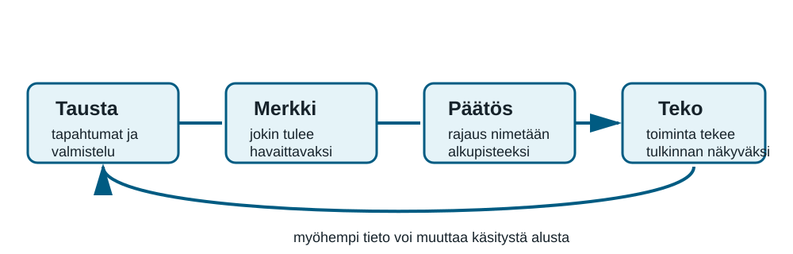
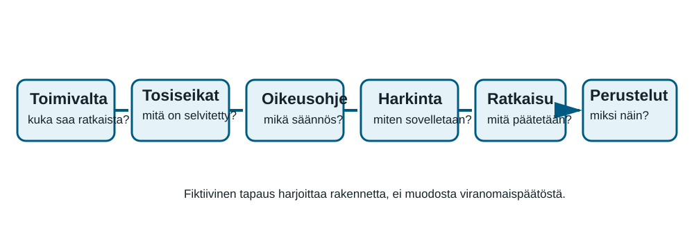
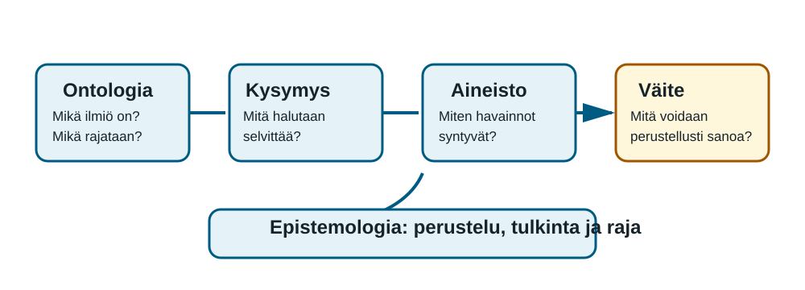
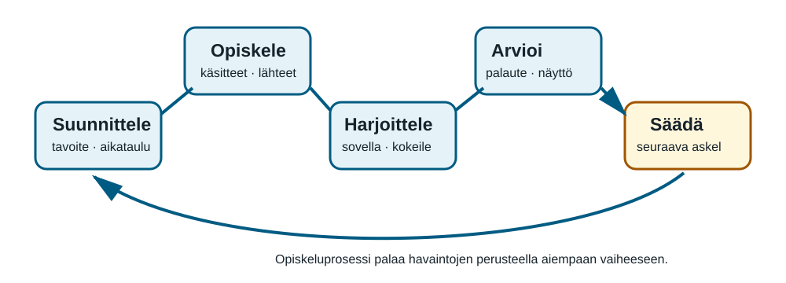
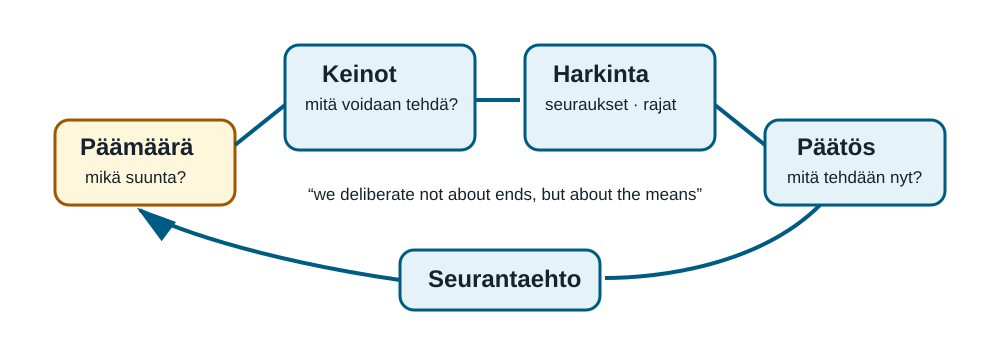

Kurssin lähtökohta
Kurssi harjoittaa erottamaan havainnon, tulkinnan, oletuksen, mittarin, oikeusohjeen, päätöksen ja käytännöllisen harkinnan. Kaikki reflektiotehtävien lähtötiedot ovat tehtävänannoissa.
1. Työn elinkaari, projektit ja mittaamisen rajat
27 h
Projekti on määräaikainen kokonaisuus, jolla on rajattu tavoite, sovitut voimavarat ja päättämistapa. Työ alkaa usein ennen ensimmäistä tehtävää: tarve on tunnistettu, ongelmaa on rajattu ja toimijat ovat tulkinneet tavoitetta. Elinkaari tekee tämän näkyväksi: tarve ja rajaus → suunnittelu → toteutus → seuranta → luovutus → arviointi ja päättäminen.
Tavoite kertoo tavoitellun muutoksen, tuotos sen, mikä valmistuu, ja vaikutus sen, mitä tuotoksen käytöstä seuraa. Mittari kuvaa vain sovittua ominaisuutta. Siksi mittarilla tulee olla käyttöseloste: kohde, keruutapa, tulkintasääntö, rajat ja sallittu käyttötarkoitus.

Keltaisen käytävän projekti ja lähteet
Kahdeksan viikon projektissa 18 vierailijasta 11 kysyi reittiä ennen muutosta ja 4 muutoksen jälkeen. Lattiamerkintä ei kuitenkaan riittänyt kahdelle näkörajoitteiselle vierailijalle. Projekti tuottaa opasteet, havaintotaulukon ja ehdotuksen jatkotoimesta; se ei väitä ratkaisseensa koko rakennuksen saavutettavuutta.
Espeland & Stevens (1998) tarkastelevat vertailukelpoisuuden rakentumista. Porter (2020 [1995]) näyttää, miksi lukuihin luotetaan ja miksi laskentatapa pitää avata.
Reflektio: Keltaisen käytävän käyttöseloste
600–800 sanaa. Laadi elinkaari, erottele tavoite, tuotos ja vaikutus, tee reittikysymysten mittarille käyttöseloste sekä ehdota saavutettavuuden jatkotoimea. Lähtötiedot: 8 viikkoa, 80 tuntia, 11/18 → 4/18 reittikysymystä ja kaksi vierailijaa, joille lattiamerkintä ei riittänyt.
2. Perusteet, toimivalta ja kelluvan portaan tapaus
27 h
Perusteltu hallintopäätös rakentuu ketjusta: toimivalta → selvitetyt tosiseikat → oikeusohje → harkinta → ratkaisu → perustelut. Valmistelija kokoaa aineistoa ja asiantuntija tuo tietoa, mutta päätöksen tekee toimivaltainen taho. Fiktiivinen alkeiden lautakunta ei ole viranomainen; hallintolakia käytetään käsitteiden opiskeluun.
| Pykälä | Mitä se säätelee tässä moduulissa |
|---|---|
| HL 2 § | Lain soveltamisalaa ja kysymystä siitä, onko kyse viranomaisasiasta. |
| HL 6 § | Tasapuolisuutta, tarkoitussidonnaisuutta, puolueettomuutta, suhteellisuutta ja luottamuksensuojaa. |
| HL 31 § | Viranomaisen velvollisuutta hankkia ratkaisun kannalta riittävät ja asianmukaiset selvitykset. |
| HL 34 § | Asianosaisen tilaisuutta lausua ja selittää ennen ratkaisua. |
| HL 44–45 § | Kirjallisen päätöksen sisältöä sekä tosiseikkojen, säännösten ja ratkaisun näkyvää yhteyttä. |

Mikä on kelluvan portaan tapaus?
Kuvitteellinen Käytävävirasto käsittelee Aavan lupahakemusta vaijereilla kannatetusta kolmiaskelmaisesta “kelluvasta portaasta”. Valmistajan muistio kuvaa porrasta vakaaksi, mutta tarkastaja havaitsee ensimmäisen askelman heiluvan kahden henkilön käytössä. Aava ei ole nähnyt tarkastajan muistiota. Sisäisen säännön mukaan päätöksen tekee yksikön päällikkö, ei tarkastaja.
Hallintolaki on ensisijainen lähde. KHO:2024:117 havainnollistaa tasapuolisuuden ja luottamuksensuojan yhteyttä; KHO:2025:13 suhteellisuutta; KHO:2025:79 kuulemista ja sen poikkeuksia.
Reflektio: kelluvan portaan perustelukartta
700–900 sanaa. Käytä tapaustietoja ja hallintolakia. Kuvaa päätösketju, toimijoiden roolit, tarpeelliset selvitykset, Aavan kuuleminen sekä 44–45 §:n mukainen päätösasiakirjan runko. Älä tee lupapäätöstä tai arvioi rakennusturvallisuutta.
3. Ontologia, epistemologia ja tieteenfilosofian kysymykset
27 h
Ontologia kysyy, mikä tarkasteltava ilmiö on ja mitä siihen kuuluu. Epistemologia kysyy, millä perusteella ilmiöstä voidaan muodostaa tietoa. Jos tutkimuksen aiheena on “onnistunut saapuminen”, on ensin ratkaistava, viitataanko odotusaikaan, ymmärrettävyyteen, saavutettavuuteen vai näiden suhteeseen. Vasta tämän jälkeen voidaan arvioida, mikä aineisto tukee väitettä.
Havainto ei puhu yksin. Kysymyslomake, mittalaite, luokittelu ja valittu aikaväli vaikuttavat siihen, mitä aineistossa voidaan nähdä. Se ei tee aineistosta arvotonta: se velvoittaa kuvaamaan menetelmän, tulkinnan ja väitteen rajan. Käytännöllinen objektiivisuus on väitteiden yhteistä arvioitavuutta näkyvien aineistojen ja perustelujen avulla.

Keskeinen aineistoesimerkki ja lähteet
Odotushuoneen tietokeskuksessa odotusaika laski 12:sta 8 minuuttiin, 14/20 vastaajaa piti ohjetta selkeänä ja 3/25 kävijästä kysyi reittiä. Aineistot kuvaavat eri ominaisuuksia, eivät yhtä automaattista “onnistumista”. Kyselystä puuttuu tieto vastaamatta jättäneistä.
Goertz & Mahoney (2012) erottavat käsitteen ja mittarin. Bogen (2014) selittää havainnon ja teorian suhdetta. Douglas (2016) tarkastelee objektiivisuuden merkityksiä.
Reflektio: Odotushuoneen tietokeskuksen kolme väitettä
800–1 000 sanaa. Rajaa ilmiön ominaisuudet, erottele havainto, tulkinta ja oletus, arvioi väitteiden rajat, ehdota kahta lisäaineistoa ja kirjoita rajattu johtopäätös. Kaikki tarvittavat luvut ovat moduulin tehtävänannossa.
4. Ammattikorkeakoulu toimintaympäristönä ja opiskeluprosessi
27 h
Ammattikorkeakoulu on tutkintoon tähtäävän opiskelun, arvioinnin, opiskeluoikeuden ja yhteisten toimintatapojen toimintaympäristö. Opiskelija ei vain vastaanota sisältöjä, vaan suunnittelee etenemistään, harjoittelee asiantuntijataitoja, käyttää palautetta ja toimii muiden kanssa.
Opiskeluprosessi etenee toistuvasti: suunnittele → opiskele → harjoittele → arvioi → säädä. Luento tai tallenne antaa kokonaiskuvan; lukeminen täsmentää käsitteitä; keskustelu tekee ajattelun näkyväksi; tapaus- ja projektityö harjoittaa soveltamista; palaute ja itsearviointi ohjaavat seuraavaa työvaihetta. Menetelmä palvelee tarkoitusta, mutta ei yksin takaa oppimista.

Opiskelijan asema ja lähteet
Perustuslain 16 §, ammattikorkeakoululaki ja yhdenvertaisuuslaki muodostavat opiskelijan aseman säädöspohjaa. Käytännön ohjeet, tutkintosääntö ja järjestyssäännöt täsmentävät toimintaa omassa korkeakoulussa. Tämä kurssi ei anna henkilökohtaista oikeudellista neuvontaa.
Prince (2004) arvioi aktiivisen oppimisen tutkimusnäyttöä. Garrison, Anderson & Archer (2000) jäsentävät verkko-oppimista tiedollisen, sosiaalisen ja opetuksellisen läsnäolon avulla.
Reflektio: Sinin neljän viikon opiskelusuunnitelma
700–900 sanaa. Laadi suunnitelma 9 tunnin viikkotyölle, valitse vähintään neljä oppimismenetelmää, kuvaa vertaispalautteen käyttö, nimeä arviointiin ja käytäntöihin liittyvät tarkistettavat lähteet sekä tee itsearviointirunko. Tapaus ja kaikki lähtötiedot ovat moduulin tehtävänannossa.
5. Harkinta, keinot ja Aristoteleen kysymys
27 h
Aristoteles kirjoittaa Nikomakhoksen etiikan III.3:ssa: “we deliberate not about ends, but about the means.” Päämäärä voi olla asetettu tai kiistanalainen, mutta harkinta vertailee keinoja, jotka ovat toimijan vallassa. Hyvä keinovertailu kysyy, sopiiko keino tavoitteeseen, onko se toteutettavissa, keitä se auttaa tai haittaa ja miten vaikutusta seurataan.
Harkinta ei ole pistelasku. Kaikkea tärkeää ei voi vaihtaa pienempään kustannukseen tai suurempaan keskiarvoon. Perusteltu seuraava askel nimeää ilmiön, aineiston, vaihtoehdot, valitun keinon, epävarmuuden ja seurantaehdon. Näin päätös voidaan avata uudelleen, jos havainto muuttaa tilannekuvaa.

Hiljaisen työpajan tapaus ja lähteet
Työpajassa 10/30 kävijästä kysyi reittiä, kolme käytti ruudunlukuohjelmaa ja osa käyttäjistä häiriintyi iltapäivän keskustelusta. Kolme keinoa ovat painetut opasteet, saavutettava verkkoreitti ja hiljainen tunti. Budjetti on 3 000 euroa ja toteutusaika kuusi viikkoa. Mikään keino ei yksin ratkaise kaikkia havaintoja.
Aristoteles, Nikomakhoksen etiikka III.3 on lähdeteksti harkinnasta. Broadie (1991) selittää Aristoteleen etiikan käytännöllistä harkintaa.
Reflektio: Hiljaisen työpajan keinoehdotus
900–1 100 sanaa. Selitä lainauksen avulla keinojen harkinta, rajaa ilmiöt, vertaile A–C-vaihtoehtoa, tee ehdotus tilapalvelupäällikölle ja kirjaa kolmen mittarin käyttöseloste sekä neljän viikon tarkistuspiste. Kaikki lähtötiedot ovat moduulin tehtävänannossa.